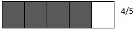
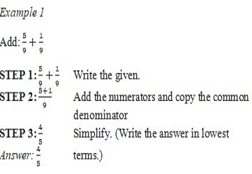
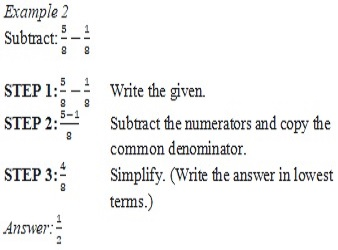

ENGAGE
Steven prepared dalandan juice for his daughter.He mixed 1/5 cup of dalandan juice and 3/5 cup of water.How many cups of liquid did he mix?
EXPLORE
To solve the problem alone,we need to add 1/5 and 3/5
Number Sentence 1/5+3/5=________
To find the sum of 1/5 and 3/5 ,consider the following models below.

1/5+3/5=4/5
Answer: Steven mixed 4/5 cup of liquid
Similar Fractions
Addition involving fractions corresponds to combining or putting things together, just like what you do in adding whole numbers. On the other hand, subtraction involves taking away or deducting things just like subtraction of whole numbers.
Similar fractions are fractions with the same denominators. The procedure below will help us easily add or subtract fractions with common denominators.
To add or subtract similar fractions:
1. Add or subtract the numerators.
2. Write the sum or difference over the common denominator.
3. Simplify or write the answer in lowest terms if necessary.


Dissimilar Fractions
Dissimilar fractions are fractions with different denominators. To add or subtract dissimilar fractions, rewrite them as similar fractions first. The sum will be represented by adding the numerators over the common denominator while the difference will be represented by subtracting the numerators over the common denominator. Simplify the sum or difference if needed.
To add or subtract dissimilar fractions:
1. Determine the least common denominator (LCD).
2. Get the equivalent fractions using this denominator.
3. Add or subtract the numerators. Then write the sum or difference over the common denominator.